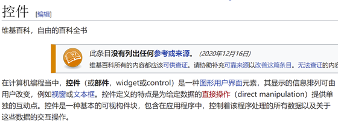
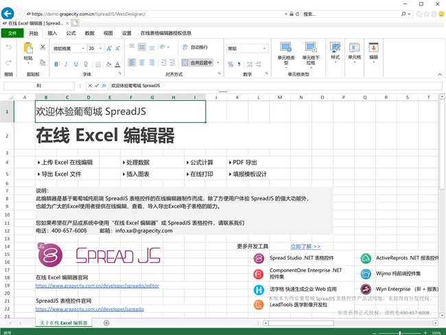

本文分三篇，描述了一个真实的客户故事，记录了从需求、场景，到选型，再到SpreadJS的应用和原理简析。
Origin: https://gcdn.grapecity.com.cn/showtopic-89995-1-1.html
需求场景：
我们公司主营业务是互联网电商服务业方面，平时会处理大量商业和用户信息，有庞大的客服团队（共约5千人左右），当时公司已有的系统，主要面向的用户就是我们的客服人员。
客服平时每天都会处理大量的工单填报、客诉登记、第三方平台原始数据的导入、统计汇总、审核审批、电签、分发等工作。平时大部分工作信息的载体都是Excel，每天服务器需要处理海量的文档，由于Excel文档本身数据难以提取入库，模板更新时也不方便第一时间分发到操作员处，难以整合到Web页面里等问题，我们的产品组接到了升级系统的提案。
要评估这个需求并不容易，当时大家讨论总结了以下几个需求点：
1. 并发：
公司客服人数众多，几千人同时在线重度操作，业务流转周期短、数据量大，所以对服务端并发性能消耗是很大的。原来是在后台用Apache POI来提取和修改Excel数据、并执行其中的公式计算等。这样会遇到两个性能瓶颈：
<1> 需要频繁地上传、下载文档，服务器带宽承受了很大的压力；
<2> 所有Excel解析、提取的操作都在服务器端，频繁的IO操作让服务器不堪重负。
以上两个性能点，在目前的架构下很难突破，这也是重构项目时最具挑战性的需求点之一。当然硬堆服务器配置也是一个解决方案，但无法解决其它的一些问题，并且也会带来运维的压力。
2. 对Excel操作和兼容性要求较高
新系统如果不能让大家快速上手使用，以这个项目用户的体量，培训成本将无法承受。而且要能够直接导入已有的Excel报表模板，否则再次开发或设计所有Excel报表也是难以接受的。
3. 报表格式灵活多变
当需要创建新的报表模板时，不需要研发的介入，操作员的设计和填报都可以在页面上完成。
4. 支持公式计算
由于涉及到商品、订单、成本核算、财务统计等模块，对计算公式的种类和性能要求较高。
5. 工作流中的数据文档
以前系统的工作流，涉及到Excel报表时，要么数据会先在服务端和Excel模板进行拼装，要么系统根据路径找到文件服务器的Excel文件，然后流转到对应环节。一些新的业务模块，甚至还只能用邮件进行文件传输。
这个过程会产生大量的文件，对文件服务器的带来了很大压力，后台也不得不定期做批量的数据拆分和维护。这次升级系统需要解决这个问题。
选型经历：
首先，选型的第一步就是搞清楚我们到底需要什么样的产品，实际上关于控件的概念，曾对我造成过很大的困扰。那么什么是控件？为什么要用控件？

其实控件就是只提供了基本功能，支持二次开发的功能模块。我们有自己的开发团队，并且当前的需求是对现有系统部分模块的升级，而不是买来一个新的系统彻底替换掉它。控件相对依赖更轻，可塑性更好，并且也有对应的开发文档和API，是面向开发者的基础功能包，便于按需求来定制功能。
其次，对于目前市面上能集成到系统中，支持这种在线表格文档编辑的产品有不少，大体我把他们分了两类：
1. 云文档产品的私有化部署
这种产品有很多，类似WPS、石墨文档、office online等都可以私有化部署。它们本身具备较高的完成度，已经帮用户实现了包括在线协同内的几乎所有功能，甚至也支持一定程度的二次开发。
但问题在于通常这类产品封闭性比较强，二次定制开发还是相对比较困难，且不够轻量。授权方式也多以按时间、按并发量、用户数量等方式授权，价格昂贵，不是很适合我们的需要。
2. 控件类
像LuckySheet、Handsontable、SpreadJS这种就是标准的控件了，它们都是纯前端表格控件，都支持Excel的功能特性和json数据绑定。
LuckySheet是国内的MIT开源软件，可以拿来商用。但在我调研时它才刚上线1、2个月，并且不像React这种有某个大厂来背书，所以不太可能拿来用到我们的正式项目里。截止目前已经过去了1年，陆续推出了QQ群、论坛等交流平台，但仍显薄弱，一些实用、易用的API相对也比较欠缺。这些缺点对于ToB场景的应用都是无法接受的。
Handsontable是国外的一个商业表格控件，据说二次开发坑较多，但对我们来说最大的问题是它没有中文支持团队，放弃。
SpreadJS是葡萄城公司的商业Excel表格控件，有趣的是我发现在V2EX的LuckySheet下方评论区中，LuckySheet的作者也说SpreadJS是行业标杆。它支持导入包括公式、图表、样式、条件格式在内的绝大部分Excel特性（不支持宏）。并且最惊喜的是，它的操作界面是一个完整的Excel界面，完全纯JS开发的，用json进行模板和数据交互。同时SpreadJS也有对应的售后支持团队，技术问题可以工作日期间随时电话、论坛交流，相关的资料包括视频、文档、示例、API手册也都非常丰富，甚至还可以请他们的技术顾问来公司培训。对于像我们这种工期短、开发任务比较繁重的项目组，确实能节约大量的精力，降低了风险。

图片来源：SpreadJS在线Excel编辑器